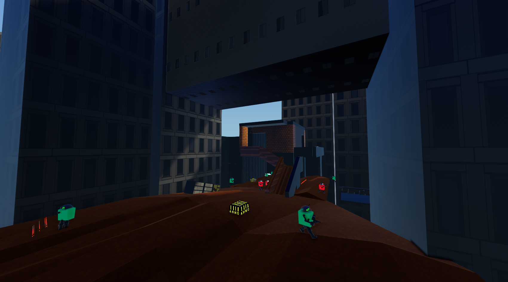
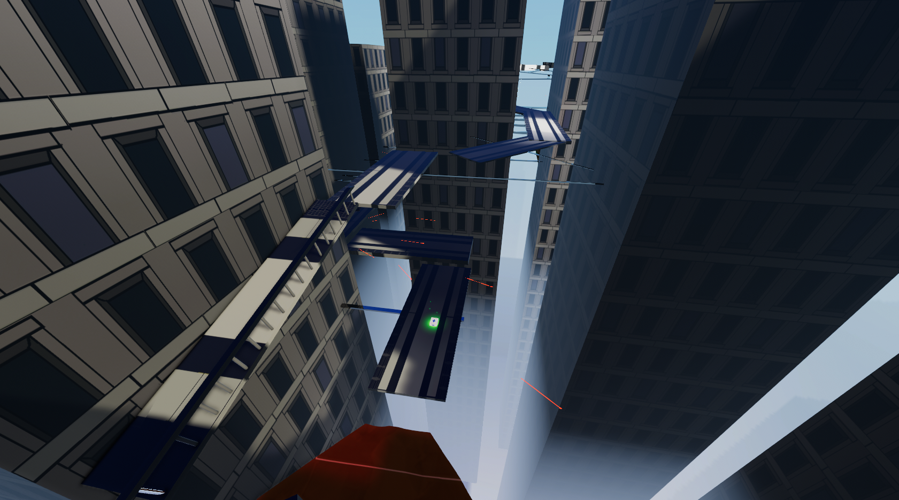

Alternate Paths
Added secret paths and tougher combat around flying towers.
Layout/Traversal:
Added second secret path to level.
Combat Sequences/Objectives:
Second path has tougher combat.
Theme/Environment:
Path goes around flying towers.

Extra Platforms
Introduced spinning platforms in the final area without enemies.
Layout/Traversal:
Final area teaches player about spinning platforms.
Combat Sequences/Objectives:
No enemies in spinning platform area.
Theme/Environment:
Puts player over intense drop.

More Paths
Higher, riskier paths offer better rewards and hang off buildings.
Layout/Traversal:
Higher path rewards thorough and risky players.
Combat Sequences/Objectives:
Better weapons and more ammo in higher area.
Theme/Environment:
Higher area hanging off buildings.
Final Polish
Improved combat pacing and enemy placements with better sky visuals.
Layout/Traversal:
Fights properly segmented with closed off areas.
Combat Sequences/Objectives:
Enemy/Ammo placements modified.
Theme/Environment:
Improved sky cubemap.